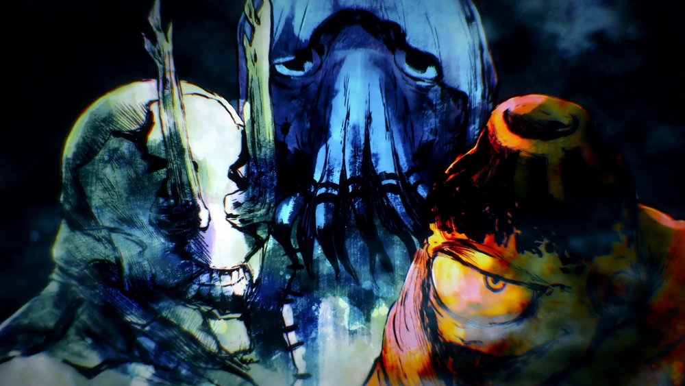

Cursed Spirits

The origin of curses and jujutsu is largely unknown. However, it can be surmised that because cursed energy comes from negative emotion, curses have always existed alongside humanity. During the Heian Era, the height of jujutsu, Ryomen Sukuna was recognized as the undisputed King of Curses. His influence has lived on to greatly affect the current age. In the modern-day, the number of unexplained deaths and disappearances in Japan exceeds ten thousand annually. These statistics are a direct result of the influence curses have on normal society. Their existence has been kept secret from non-sorcerers, as they are invisible to them. Jujutsu sorcerers act in secret to repel the threat of curses.
Curses are created when cursed energy leaks from humans as a result of their human emotion. Cursed energy builds up like sediment until a cursed spirit takes form. Populated locations such as schools and hospitals are hot spots for bearing curses because many negative emotions are associated with memories of those places. This same concept applies humanity's collective fear and hatred. An image of fear shared by the masses can create a powerful curse even if the subject is not real, such as famous monsters or ghosts. It is the negative emotions that humanity directed at this image that causes it to manifest as a curse.